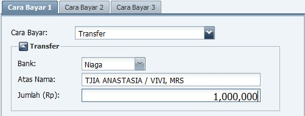
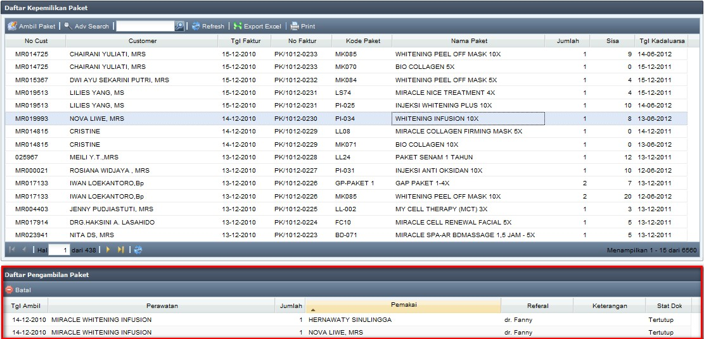
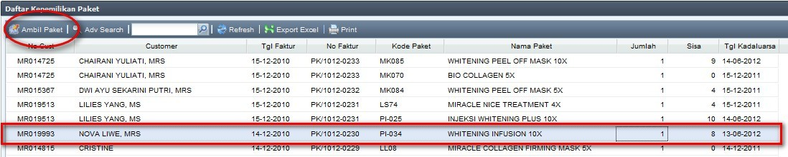
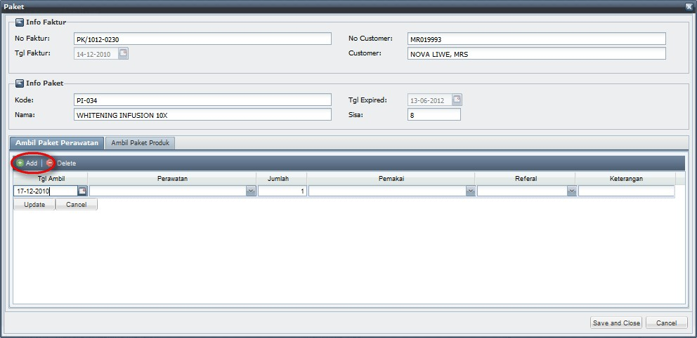
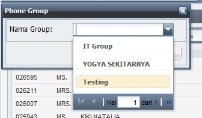

Ubah Status Tindakan Medis
(note: jika setelah di-Refresh Customer masih belum muncul di Daftar Tindakan Medis, maka segera laporkan ke CRO, karena kemungkinan Status Appointment belum diubah menjadi "datang")



Definisi status “tindakan” ini adalah saat ketika tim Medis / Non Medis menangani customer. (Tips: ganti status menjadi “tindakan” sesaat sebelum menjemput customer)

Hal yang perlu diperhatikan disini adalah, pada setiap penggantian status, sistem akan mencatat waktunya, sehingga akan diketahui seberapa cepat / lama waktu tunggu customer serta seberapa tepat waktu tindakan dilakukan.

(note: untuk melihat apakah Customer memiliki Paket, dapat dilihat pada menu Kasir --> Informasi Pengambilan Paket. Cara penggunaan Informasi Pengambilan Paket dapat dilihat di bagian lain User Manual ini, atau klik disini)

(note: Untuk memudah CRO mengatur jadwal Dokter / Suster, ubah Status menjadi selesai sesaat sebelum tindakan selesai)
Copyright © 2010, IT Department of Miracle Aesthetic Clinic Group
Created with the Freeware Edition of HelpNDoc: Create HTML Help, DOC, PDF and print manuals from 1 single source